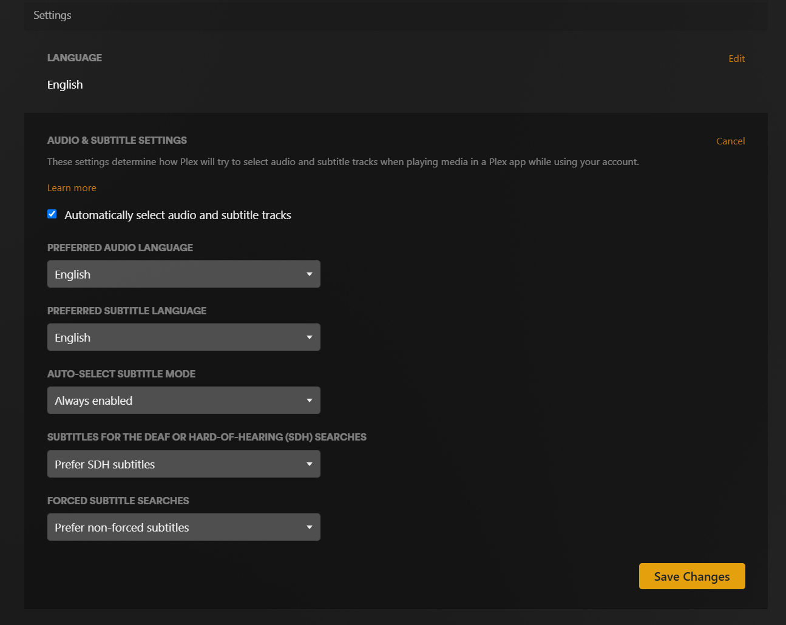

Account Settings
You can log into your Plex account on the web to update various settings.
I recommend at least updating your language and subtitle settings.
Privacy and email subscriptions
Ethan Sholly has put together a good resource for checking Plex's various privacy-related settings, including marketing email preferences, ad partner data usage, playback data, and more: Optimal Plex Settings for Privacy-Conscious Users
In case the original article is unavailable, it is archived on Wayback Machine.
Audio and subtitle preferences
- Log into your account on the web, then go to the Account Settings page and scroll down to the "Settings" section
- Set your Language preference:
- Next to "LANGUAGE", click "Edit", select your preferred language, then click "Save Changes"
- Set your Audio & Subtitle preferences:
- Next to "AUDIO & SUBTITLE SETTINGS" click "Edit"
- Select the checkbox for "Automatically select audio and subtitle tracks"
- Set your preferred language for audio and subtitles
My recommendation
- Leave the audio option empty
- Select "Auto-Select Subtitle Mode" to "Always Enabled"
- The last two boxes are up to you — they only apply if something on Plex doesn't already have subtitles and you use its built-in search tool to find some
FYI
- SDH subtitles include non-dialog effects like [COWS MOOING]
- "Forced" subtitles contain only the foreign dialogue in an otherwise all-English movie
- Select "Save Changes"
You can always change your subtitle selection for any given content while you're watching it.
